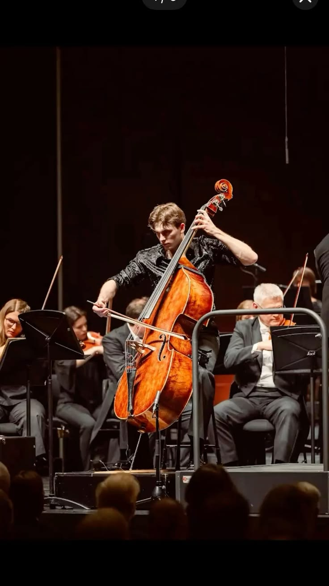

01 / PIANO
피아노 앙상블
두 대의 피아노와 다양한 악기 편성으로 함께 만들어가는 풍성한 하모니.
취미로 악기를 다루는 연주자들이 모여 실내악 및 앙상블을 경험하고 개인 레슨을 받을 수 있도록 연결해 드리는 전문 음악 커뮤니티입니다.
피아노, 목관악기, 현악기 등 다양한 악기군이 조화를 이루는 곳. 나만의 속도로 배우는 개인 레슨부터 서로의 소리를 맞춰가는 앙상블까지 함께합니다.
함께 연주할 때 더 완벽해지는 음악,
아마빌레와 함께하세요.
두 대의 피아노와 다양한 악기 편성으로 함께 만들어가는 풍성한 하모니.
클라리넷, 플루트 등 목관악기의 따뜻하고 다채로운 음색을 교류합니다.

바이올린, 첼로 등 현악기의 섬세한 선율이 만나 완성하는 실내악의 감동.
관악기의 조화로 만드는 풍성한 울림.

홀로 완성하는 나만의 선율.
나만의 선율이 우리의 하모니가 되는 곳, 지금 함께 시작하세요.
“음악은 혼자 완성하는 것이 아니라,
함께 나누며 더 아름다워집니다.”
당신의 음악이 누군가의 선율과 만나는 곳, 아마빌레 아카데미
아마빌레 아카데미 방문을 환영합니다. 방문 전 미리 연락 주시면 더욱 편안하게 안내받으실 수 있습니다.
대중교통을 이용하여 편리하게 방문하실 수 있는 길라잡이입니다.